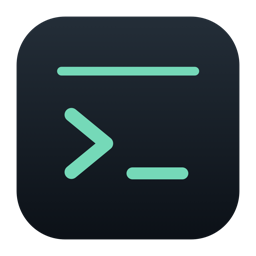

One thing at a time.
Room for the work in front of you.
✓ Keep the important things close
✓ Leave a little breathing room

TopTermA little more room to think · macOS 14+
A real terminal, tucked into your menu bar. Bring it down, do your thing, and put it away. Everything keeps running.
Download for MacApple silicon · macOS 14 or later
Room for the work in front of you.
✓ Keep the important things close
✓ Leave a little breathing room
~ ❯ printf 'A little more room to think.\n' A little more room to think. ~ ❯
Start at 50%. Drag the bottom edge to make it yours. Jump to full height, then return to exactly where you left it.
Independent shell sessions for servers, scripts, and everything in between. Hiding the drawer keeps your work running.
Record the keys that feel right. Click the shortcut in the drawer to change it. TopTerm remembers your choice.
SMALL APP. REAL TERMINAL.
Use the shell and tools you already know. No account to create. No telemetry to turn off.
Download TopTerm 0.1.2 for Apple silicon, open the disk image, and drag TopTerm into Applications. Requires macOS 14 or later. Signed by Reality Software Entertainment LLC and notarized by Apple.
Explore the sourcegit clone https://github.com/ChaosDeSelva/TopTerm.git
cd TopTerm
zsh scripts/build.sh
open build/TopTerm.appAll dependencies are included. Nothing extra to download during the build.